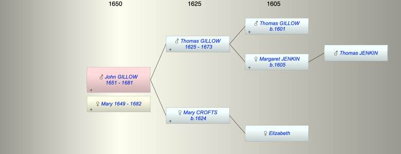

| [Index] |
| John GILLOW (1651 - 1681) |
|  |
| b. 1651 at Walmer |
| +. Mary (1649 - 1682) |
| d. 18 Jan 1681 at St Laurence aged 30 |
| Parents: |
| Thomas GILLOW (1625 - 1673) |
| Mary CROFTS (1624 - ) |
| Siblings (3): |
| Margaret GILLOW (1646 - ) |
| Mary GILLOW (1648 - ) |
| Elizabeth GILLOW (1654 - ) |
| Events in John GILLOW (1651 - 1681)'s life | |||||
| Date | Age | Event | Place | Notes | Src |
| 1651 | John GILLOW was born | Walmer | Note 1 | ||
| 23 Nov 1673 | 22 | Death of father Thomas GILLOW (aged 48) | Note 2 | ||
| 18 Jan 1681 | 30 | John GILLOW died | St Laurence | Note 3 | |
| Created on a Mac™ using iFamily for Mac™ on 8 Oct 2023 |